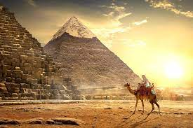
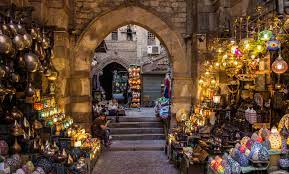

My favourite places to see in Egypt
The Pyramids
The Giza pyramid complex (Arabic: مجمع أهرامات الجيزة), also called the Giza necropolis, is the site on the Giza Plateau in Greater Cairo, Egypt that includes the Great Pyramid of Giza, the Pyramid of Khafre, and the Pyramid of Menkaure, along with their associated pyramid complexes and the Great Sphinx of Giza.
Khan El Khalili
Khan el-Khalili (Arabic: خان الخليلي) is a famous bazaar and souq (or souk) in the historic center of Cairo, Egypt. Established as a center of trade in the Mamluk era and named for one of its several historic caravanserais,
aswan
Aswan is a busy market and tourist centre located just north of the Aswan Dam on the east bank of the Nile at the first cataract. The modern city has expanded and includes the formerly separate community on the island of Elephantine.Aswan includes five monuments within the UNESCO
el gouna
El Gouna's buildings were designed by European and American architects to resemble traditional rural Egyptian architecture such as that found in the Egyptian countryside and in Nubian villages. El Gouna specializes in watersports. There are several beaches including Zeytuna Beach (Arabic: شاطئ زيتونة) located on its own island , Mangroovy Beach, Moods Beach and other hotel beaches. There are three main areas in El Gouna, Downtown, Tamr Henna Square (Arabic: ميدان تمر حنة) and the Abu Tig Marina (Arabic: مارينا أبو تيج).